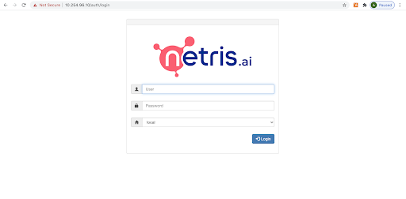

On-prem Netris Controller installation¶
Netris Controller can be hosted in Netris cloud, installed locally as a VM, or deployed as a Kubernetes application. All three options provide the same functionality. Cloud-hosted Controller can be moved into on-prem anytime.
KVM virtual machine¶
Installation steps for KVM hypervisor¶
If KVM is not already installed, install Qemu/KVM on the host machine (example provided for Ubuntu Linux 18.04)
sudo apt-get install virt-manager
Netris Controller Installation steps¶
Download the Netris Controller image. (contact Netris support for repository access permissions).
cd /var/lib/libvirt/images
sudo wget http://img.netris.ai/netris-controller.qcow2
Download vm definition file.
cd /etc/libvirt/qemu
sudo wget http://img.netris.ai/netris-controller.xml
Define the KVM virtual machine
sudo virsh define netris-controller.xml
Note
Netris controller virtual NIC will bind to the “br-mgmt” interface on the KVM host machine. See below network interface configuration exam
Example: Network configuration on host (hypervisor) machine.
Note
replace <Physical NIC>, <host server management IP/prefix length> and <host server default gateway> with the correct NIC and IP for your host machine.
sudo vim /etc/network/interfaces
#Physical NIC connected to the management network
auto <Physical NIC>
iface <Physical NIC> inet static
address 0.0.0.0/0
#bridge interface
auto br-mgmt
iface br-mgmt inet static
address <host server management IP/prefix length>
gateway <host server default gateway>
bridge-ports <Physical NIC>
source /etc/network/interfaces.d/*
sudo ifreload -a
Set the virtual machine to autostart and start it.
sudo virsh autostart netris-controller
sudo virsh start netris-controller
Accessing the Netris Controller¶
By default, Netris Controller will obtain an IP address from a DHCP server.
Below steps describe how to configure a static IP address for the Netris Controller.
Connecting to the VM console.
default credentials. login: netris password: newNet0ps
sudo virsh console netris-controller
Note
Do not forget to change the default password (using passwd command).
Setting a static IP address.
Edit network configuration file.
sudo vim /etc/network/interfaces
Example: IP configuration file.
# The loopback network interface
auto lo
iface lo inet loopback
# The primary network interface
auto eth0
iface eth0 inet static
address <Netris Controller IP/prefix length>
gateway <Netris Controller default gateway>
dns-nameserver <a DNS server address>
source /etc/network/interfaces.d/*
Reload the network config.
sudo ifreload -a
Note
Make sure Netris Controller has Internet access.
Reboot the controller
sudo reboot
After reboot, the Netris Controller GUI should be accessible using a browser. Use netris/newNet0ps credentials.

Don’t forget to change the default password by clicking your login name in the top right corner and then clicking “Change Password”.
Security hardening¶
Changing the default GRPC authentication key.¶
Connect to the Netris Controller CLI (SSH or Console)
Tip: You can generate a random and secure key using sha256sum.
echo "<some random text here>" | sha256sum
example:
netris@iris:~$ echo "<some random text here>" | sha256sum
6a284d55148f81728f932b28e9d020736c8f78e1950b3d576f6e679d90516df1 -
Set your newly generated secure key into Netris Controller.
sudo /opt/telescope/netris-set-auth.sh --key <your key>
Please store the auth key in a safe place as it will be required every time when installing Netris Agent for the switches and SoftGates.
Replacing the SSL certificate¶
Replace below file with your SSL certificate file.
/etc/nginx/ssl/controller.cert.pem;
Replace below file with your SSL private key.
/etc/nginx/ssl/controller.key.pem;
Restart Nginx service.
systemctl restart nginx.service